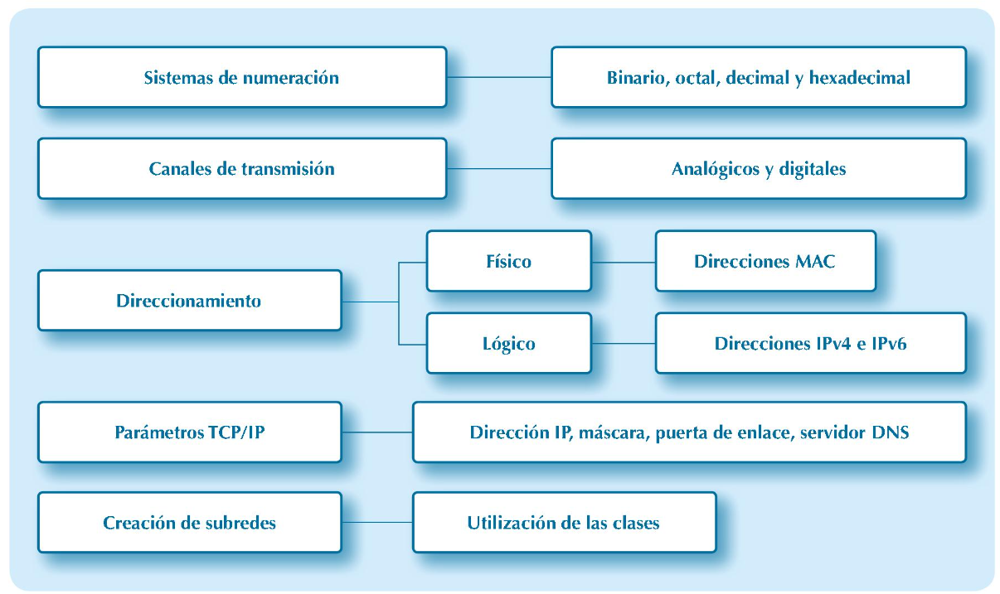
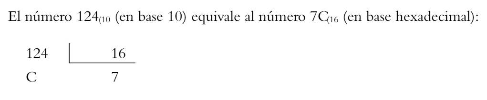
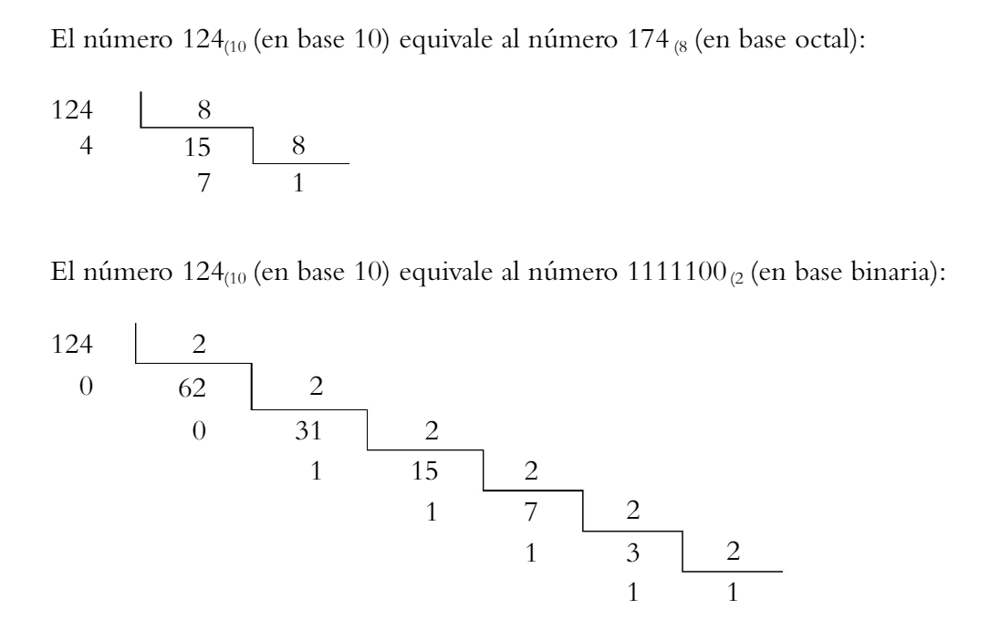
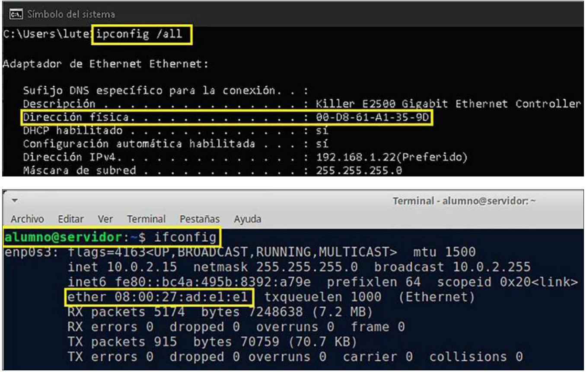
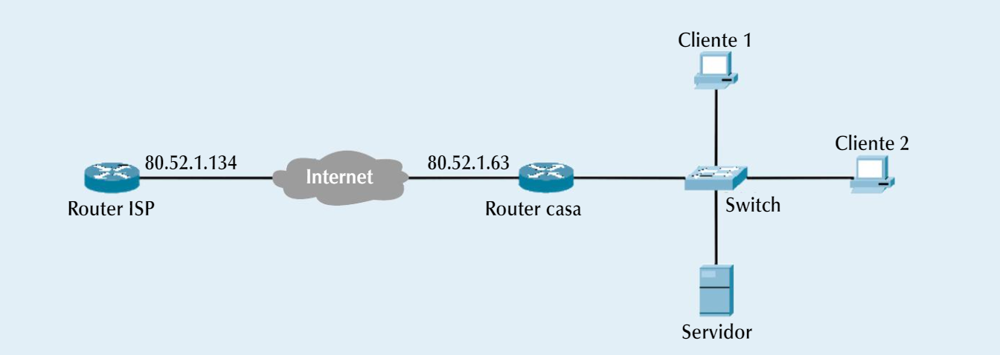
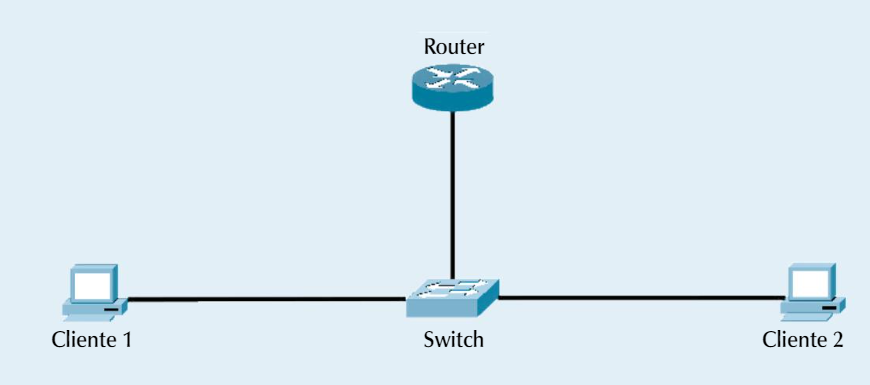
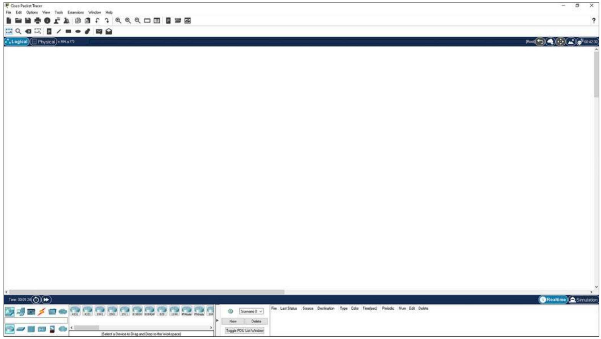
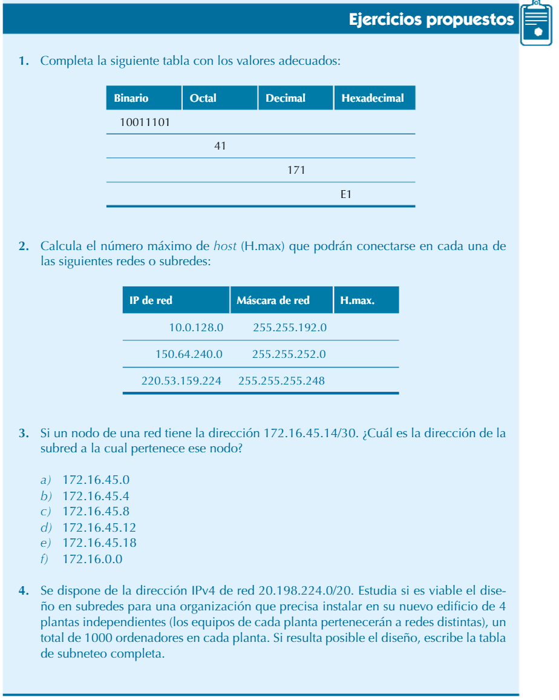
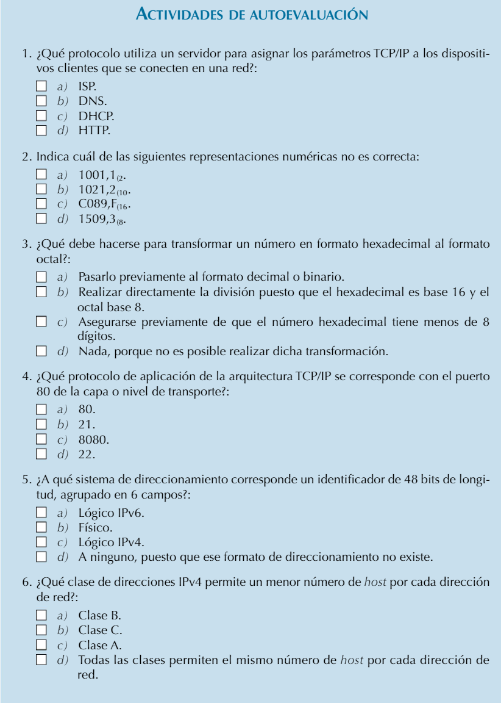
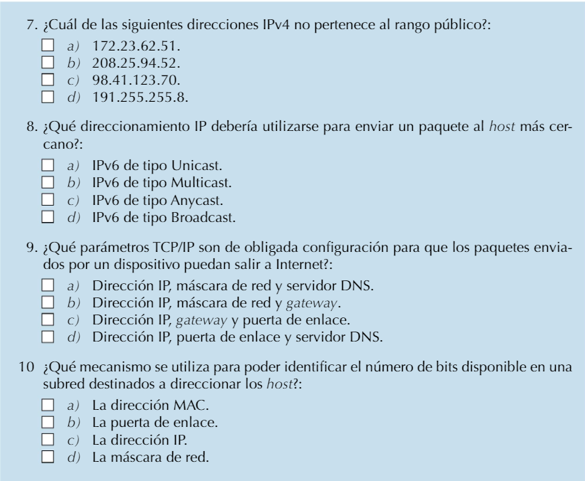

Unidad 0: Conceptos previos
Objetivos
- Aprender a operar con los diferentes sistemas de numeración.
- Clasificar y caracterizar los canales de transmisión.
- Entender los distintos tipos de direccionamiento utilizados en una red.
- Configurar y gestionar los parámetros TCP/IP en los dispositivos de una red.
- Aplicar la división de subredes a partir de una dirección de red.
- Instalar y manejar una herramienta de simulación de redes de ámbito global.
Mapa conceptual

Glosario
Glosario de términos
APIPA: Del inglés, Automatic Private Internet Protocol Addressing, siglas que hacen alusión a direccionamiento privado automático del protocolo de Internet. Protocolo utilizado para la autoconfiguración de dispositivos.
CNA: Del inglés, Cisco Networking Academy, programa educativo sin ánimo de lucro cuyo objetivo es contribuir a la preparación de estudiantes en el diseño, configuración y mantenimiento de redes, a través de uno de los modelos online más avanzados.
DHCP: Siglas en inglés relativas al protocolo de configuración dinámica de host. Protocolo que se instala en el servidor, utilizado para asignar los parámetros TCP/IP a los dispositivos clientes de red conectados.
DNS: Hace referencia al servicio o sistema de nombres de dominio (Domain Name System) y es utilizado para asociar las direcciones IP con sus correspondientes nombres de dominio.
Hexteto: Término utilizado para referirse al conjunto de 16 bits o bien al conjunto de cuatro caracteres hexadecimales consecutivos.
ISP: Del inglés, Internet Service Provider. Término utilizado para identificar a las compañías que proporcionan acceso a Internet.
Nibble: Término utilizado para referirse al conjunto de cuatro dígitos binarios.
Octeto: Término utilizado para referirse al conjunto de 8 bits. También es denominado Byte.
Subnetting: Término que hace referencia a la subdivisión de una red en varias subredes. Siglas del inglés Transfer Control Protocol/Internet Protocol, que hacen mención a la arquitectura de red del mismo nombre.
0.1. Sistemas de numeración: binario, octal, decimal y hexadecimal
En el contexto tecnológico de la informática y las telecomunicaciones, al igual que en tantos otros, se hace evidente la necesidad de utilizar sistemas de representación. Los ordenadores y las redes de telecomunicaciones fundamentan dicha representación en cuatro sistemas: binario, octal, decimal y hexadecimal. Todos ellos disponen de su correspondiente expresión polinómica para representar cualquier magnitud en su equivalente decimal, tal y como se muestra en el cuadro siguiente:
Cuadro 0.1
| Sistema | Expresiones polinómicas |
|---|---|
| Binario | N₁₀ = aₙ . 2ⁿ + aₙ₋₁ . 2ⁿ⁻¹ + ... + a₁ . 2¹ + a₀ . 2⁰ + ... |
| Octal | N₁₀ = aₙ . 8ⁿ + aₙ₋₁ . 8ⁿ⁻¹ + ... + a₁ . 8¹ + a₀ . 8⁰ + ... |
| Decimal | N₁₀ = aₙ . 10ⁿ + aₙ₋₁ . 10ⁿ⁻¹ + ... + a₁ . 10¹ + a₀ . 10⁰ + ... |
| Hexadecimal | N₁₀ = aₙ . 16ⁿ + aₙ₋₁ . 16ⁿ⁻¹ + ... + a₁ . 16¹ + a₀ . 16⁰ + ... |
Así, podemos representar cualquier número en base binaria, octal, decimal o hexadecimal en su forma polinómica exponencial.
Por ejemplo:
Así, podemos representar cualquier número en base binaria, octal, decimal o hexadecimal en su forma polinómica exponencial.
Por ejemplo:
- 1101,1₂ = 1 · 2³ + 1 · 2² + 0 · 2¹ + 1 · 2⁰ + 1 · 2⁻¹
- 4076,3₈ = 4 · 8³ + 0 · 8² + 7 · 8¹ + 6 · 8⁰ + 3 · 8⁻¹
- 9143,2₁₀ = 9 · 10³ + 1 · 10² + 4 · 10¹ + 3 · 10⁰ + 2 · 10⁻¹
- 127F,A₁₆ = 1 · 16³ + 2 · 16² + 7 · 16¹ + 15 · 16⁰ + 10 · 16⁻¹
Cualquier número puede ser representado en cada uno de los sistemas, utilizando para ello los correspondientes símbolos de representación propios (por ejemplo, para el sistema binario se utilizan dos símbolos, el 0 y el 1, mientras que para el sistema octal se utilizan los símbolos 0, 1, 2, 3, 4, 5, 6 y 7).
Cuadro 0.2 - Equivalencias numéricas entre sistemas
| Hexadecimal | Decimal | Octal | Binario |
|---|---|---|---|
| 0 | 0 | 0 | 0000 |
| 1 | 1 | 1 | 0001 |
| 2 | 2 | 2 | 0010 |
| 3 | 3 | 3 | 0011 |
| 4 | 4 | 4 | 0100 |
| 5 | 5 | 5 | 0101 |
| 6 | 6 | 6 | 0110 |
| 7 | 7 | 7 | 0111 |
| 8 | 8 | 10 | 1000 |
| 9 | 9 | 11 | 1001 |
| A | 10 | 12 | 1010 |
| B | 11 | 13 | 1011 |
| C | 12 | 14 | 1100 |
| D | 13 | 15 | 1101 |
| E | 14 | 16 | 1110 |
| F | 15 | 17 | 1111 |
Es muy importante saber operar y transformar números entre los diferentes sistemas. Para ello, resulta muy útil manejar con soltura la equivalencia mostrada en el cuadro 1.3, que representa el valor decimal de cada uno de los bits de un octeto, según su peso.
Cuadro 0.3 - Valores decimales de la posición de cada bit
| 2⁷ | 2⁶ | 2⁵ | 2⁴ | 2³ | 2² | 2¹ | 2⁰ |
|---|---|---|---|---|---|---|---|
| 128 | 64 | 32 | 16 | 8 | 4 | 2 | 1 |
Por ejemplo:


El número 10101001₂ (en base 2) equivale al número 251₈ (en base octal):
- 10101001₂ → 251 (se agrupan de 3 en 3 dígitos de derecha a izquierda)
El número 10101001₂ (en base 2) equivale al número A9₁₆ (en base hexadecimal):
- 10101001₂ → A9 (se agrupan de 4 en 4 dígitos de derecha a izquierda)
El número 512₈ (en base 8) equivale al número 14A₁₆ (en base hexadecimal):
- 512₈ → 101001010₂ → 14A₁₆
Actividad propuesta 0.1
Completa la siguiente tabla con los valores adecuados:
| Binario | Octal | Decimal | Hexadecimal |
|---|---|---|---|
| 11011001 | |||
| 267 | |||
| 129 | |||
| FC |
Toma nota
Para transformar los números del formato octal al hexadecimal o viceversa se debe pasar previamente al formato decimal o binario.
0.2. Canales de transmisión de datos
Un canal de transmisión de datos es el camino a través del cual viaja la información entre un emisor y un receptor. Estos datos pueden propagarse sobre medios guiados (por ejemplo, los cables de par trenzado) o sobre medios no guiados (por ejemplo, las ondas de radio).
0.2.1. Transmisión de datos analógica y digital
La transmisión de información entre dos o más puntos puede realizarse utilizando infinidad de tecnologías, pero todas ellas se fundamentan en la transmisión de dos tipos concretos de señales: analógicas o digitales. Estas señales serán las que transporten los datos propiamente dichos, es decir, los datos que se envían son siempre información digital que será transmitida a través de un medio, utilizando para ello, o bien una señal analógica, o bien una señal digital.
Vídeo interesante sobre ordenadores analógicos
Por ejemplo:
La red telefónica básica (RTB) o red telefónica conmutada (RTC) es un claro ejemplo de sistema analógico, el cual ha sido ampliamente utilizado, y todavía lo sigue siendo, como medio de transmisión de voz.
Las actuales infraestructuras de redes de fibra óptica que dan soporte para el acceso a Internet, como por ejemplo, Movistar, Jazztel, etc., representan sistemas digitales, y en algunos de los casos, lo son totalmente de extremo a extremo (FTTH – Fiber To The Home).
0.2.2. Características de los canales de transmisión
Existen numerosas clasificaciones o taxonomías de los canales o medios de transmisión en función de las características bajo las que se realice dicho estudio. Algunos de los parámetros o características más importantes son:
-
Velocidad de transmisión. Se mide en bits por segundo (bps) o múltiplos de este (Kbps, Mbps, etc.) y permite cuantificar la velocidad a la que pueden transmitirse los datos a través de un canal. Por ejemplo, una red FastEthernet tiene una velocidad de transmisión máxima de 100 Mbps.
-
Ancho de banda. También conocido como banda de paso, suele expresarse en hercios (Hz) y define el conjunto de frecuencias que son capaces de transmitirse sobre un canal. Por ejemplo, habitualmente, las bandas de frecuencia más utilizadas en las redes wifi son la de 2,4 GHz y la de 5 GHz.
-
Ruido. Es el conjunto de fenómenos o interferencias que pueden afectar al canal de transmisión. Puede ser causado por factores externos al canal o ser inherentes al mismo. Por ejemplo, la diafonía que se produce en un canal por la proximidad de otro canal.
-
Distancia máxima. Suele medirse en metros (m) o kilómetros (km) y hace referencia a la distancia máxima que es capaz de alcanzar la señal transmitida sin perder su capacidad de ser interpretada correctamente por el receptor. Por ejemplo, en una red Ethernet la distancia máxima del cable de par trenzado que puede utilizarse entre dos nodos es de 100 m.
0.3. Direccionamiento físico y lógico de una red
De la misma forma que es utilizado el número de bastidor de un automóvil para poder identificarlo y diferenciarlo de todos los demás, es necesario utilizar un mecanismo de identificación, para poder identificar de forma única los diferentes dispositivos dentro de una red informática. Este mecanismo recibe el nombre de direccionamiento.
De forma general, podemos diferenciar dos tipos de direcciones en el entorno de una red de ordenadores: las direcciones físicas y las direcciones lógicas. Para una mejor comprensión de estos conceptos conviene basarse en la arquitectura de red TCP/IP, mostrada en el cuadro 0.4, la más ampliamente utilizada en las redes a nivel mundial.
Cuadro 0.4 - Niveles de la arquitectura TCP/IP con su direccionamiento
| Nivel o capa | Sistema de direccionamiento | Ejemplos |
|---|---|---|
| Aplicación | Protocolos de aplicación | http, ftp, etc. |
| Transporte | Puertos de acceso | 80, 21, etc. |
| Internet | Direcciones lógicas | IPv4, IPv6 |
| Acceso a la red | Direcciones físicas | MAC |
0.3.1. Direccionamiento físico (MAC)
La dirección física o MAC (Media Access Control) es un identificador único de 48 bits. Está compuesto por 6 grupos de 2 dígitos hexadecimales, conocidos como nibbles, y se representa en formato hexadecimal. Este tipo de dirección es válida únicamente en redes locales (LAN), donde se utiliza para identificar dispositivos que están conectados a la misma red. Si se quiere comunicar con un dispositivo fuera de la red local, es necesario usar un direccionamiento lógico.
El formato estándar de una dirección MAC es:
AA:BB:CC:DD:EE
Los primeros tres bloques (AA:BB:CC) identifican al fabricante del dispositivo, mientras que los últimos tres bloques (DD:EE:FF) contienen el número de serie único de la tarjeta de red. Esta dirección es asignada por el fabricante y no puede ser duplicada entre dispositivos.
Para visualizar la dirección MAC de un dispositivo, puedes utilizar el comando en Windows:
o en Linux: Estos comandos muestran la información de la red, incluyendo la dirección física del dispositivo. Figura 0.2 Visualización en consola de dirección física o MAC.
0.3.2. Direccionamiento lógico (IPv4)
El direccionamiento lógico es un método que asigna un identificador único a la interfaz de red o tarjeta de red de un dispositivo. Este identificador puede utilizarse tanto en redes locales como en redes globales, permitiendo que los dispositivos se comuniquen entre sí, ya sea dentro de la misma red local o fuera de ella.
La dirección IPv4 es una dirección lógica compuesta por 32 bits, organizados en 4 grupos de 8 bits cada uno, separados por puntos. Cada uno de estos grupos se representa en formato decimal. Esta dirección se divide en dos partes principales: una parte identifica la red, mientras que la otra parte se refiere al dispositivo específico dentro de esa red (el host). Más adelante en este capítulo se explicará en detalle esta división. El formato típico de una dirección IPv4 es el siguiente:
W.X.Y.Z (10
De manera similar a como se hace con las direcciones físicas, es bastante sencillo determinar cuál es la dirección lógica de la interfaz de red o NIC (Network Interface Controller). La figura 0.3 muestra un ejemplo.
En cuanto a las partes funcionales que conforman una dirección IPv4 (recordemos que tiene dos partes: la parte de red y la parte del host), es crucial señalar que su principal función es identificar la red o subred a la que pertenece un dispositivo en particular.
El direccionamiento IPv4 se organiza en diferentes clases, lo que permite establecer rangos de direcciones específicas. Estas clases facilitan el diseño y análisis de redes de distinta magnitud. Así, el tipo de clase que se utilice dependerá del tipo de red y la cantidad de dispositivos que vayan a formar parte de dicha red.
Dentro de cada clase de direcciones IPv4, se establecen subrangos de direcciones, lo que da lugar a los rangos de direcciones públicas y privadas. Las direcciones públicas son asignadas a dispositivos que necesitan estar directamente accesibles en Internet, mientras que las direcciones privadas se aplican a dispositivos conectados en una red interna y que no requieren acceso directo a Internet. El cuadro 0.5 muestra los rangos de direcciones públicas y privadas en las tres primeras clases de IPv4.
Cuadro 0.5 - Rangos de direcciones IPv4 públicas y privadas
| Clase | Direcciones públicas | Direcciones privadas | Máscara de red |
|---|---|---|---|
| A | 1.0.0.1 - 126.255.255.254 | 10.0.0.1 - 10.255.255.254 | 255.0.0.0 |
| B | 128.0.0.1 - 191.255.255.254 | 172.16.0.1 - 172.31.255.254 | 255.255.0.0 |
| C | 192.0.0.1 - 223.255.255.254 | 192.168.0.1 - 192.168.255.254 | 255.255.255.0 |
En el diseño de redes utilizando IPv4, es esencial tener en cuenta cuántos dispositivos van a formar parte de la red. Como se explicó previamente, una dirección IPv4 está formada por dos partes: una que identifica la red y otra que identifica el dispositivo dentro de esa red. Esta organización facilita la asignación de direcciones y ayuda a gestionar correctamente el tráfico de red.
El concepto de máscara de red se abordará más adelante en la sección 0.5.1. El cuadro 0.6 muestra la relación entre las clases IPv4 y sus partes funcionales.
Cuadro 0.6 - Partes funcionales de una dirección IPv4: parte de red y parte de host
| Clase | Parte funcional | Número de redes | Número de hosts |
|---|---|---|---|
| A | red.host.host.host | 2⁷ - 2 = 128 | 2²⁴ - 2 = 16777214 |
| B | red.red.host.host | 2¹⁴ = 16384 | 2¹⁶ - 2 = 65534 |
| C | red.red.red.host | 2²¹ = 2097152 | 2⁸ - 2 = 254 |
Recuerda
Para calcular cuántos hosts pueden conectarse en una red determinada, debes tener en cuenta el número de bits disponibles para los hosts y restar dos de ese valor. Esto se debe a que la primera dirección, que solo contiene ceros, se reserva para identificar la red, y la última, compuesta de unos, se reserva para fines especiales.
Por ejemplo:
Si tenemos la dirección IP 195.214.12.0 con la máscara 255.255.255.0, se podrán direccionar los hosts desde 195.214.12.1 hasta 195.214.12.254. Ten en cuenta que las direcciones que terminan en 0 identifican la red, mientras que la que termina en 255 está reservada para otras funciones.
Actividad propuesta 0.2
Se te proporciona la configuración de una red doméstica. Debes asignar las direcciones TCP/IP a dos equipos cliente y un servidor, dentro del rango privado 192.168.1.0/24. Recuerda asignar las primeras direcciones IP disponibles a los clientes y reservar la última IP para el gateway. Usa la dirección restante para el servidor, siguiendo una asignación descendente.

Rellena la tabla siguiente con los parámteros TCP/IP correspondientes:
| Equipo | Dirección IPv4 | Máscara de red | Gateway |
|---|---|---|---|
| Router casa | |||
| Cliente 1 | |||
| Cliente 2 | |||
| Servidor |
0.3.3. Direccionamiento lógico (IPv6)
Las direcciones IPv6 están formadas por 128 bits, que se agrupan en 8 bloques de 16 bits cada uno. Estos bloques suelen representarse en formato hexadecimal y están separados por dos puntos (:). Un ejemplo de una dirección IPv6 sería:
8888:9999:AAAA:BBBB:CCCC:DDDD:EEEE (16
Las direcciones IPv6 se clasifican en tres tipos principales:
- Unicast: Se utiliza para identificar una única interfaz de red en un nodo. Cuando un paquete se envía a una dirección Unicast, solo ese nodo lo recibe.
- Multicast: Se utiliza para enviar un paquete a un grupo de nodos. Todos los dispositivos del grupo recibirán el paquete al mismo tiempo.
- Anycast: Similar a Multicast, pero en este caso, el paquete lo recibe el nodo más cercano al remitente, es decir, el nodo que pueda ofrecer la mejor ruta.
Además de estos tipos, existen subtipos de direcciones IPv6, que son específicos para ciertos usos. Los subtipos más importantes pertenecen a las direcciones Unicast y son:
- Global: Son las direcciones que se utilizan para la conexión a Internet, equivalentes a las direcciones públicas en IPv4.
- Enlace Local (Link-Local): Se usan solo dentro de una red local y no pueden ser enrutadas hacia Internet. Estas direcciones permiten la autoconfiguración de los nodos, y son equivalentes al protocolo APIPA en IPv4.
- Sitio Local (Site-Local o Unique-Local): Se utilizan en redes locales, aunque pueden ser enrutadas dentro de ese sitio. Sin embargo, no pueden ser enrutadas hacia Internet. Son equivalentes a las direcciones privadas utilizadas en IPv4.
Resumen de las Direcciones IPv6
- Unicast: Envía datos a un solo nodo.
- Multicast: Envía datos a varios nodos simultáneamente.
- Anycast: Envía datos al nodo más cercano al remitente.
Los subtipos como Global, Link-Local y Site-Local definen cómo se manejan las direcciones IPv6 en redes locales e Internet.
Hay que tener en cuenta que en las direcciones IPv6 también se utilizan prefijos y rangos concretos según el tipo y subtipo de dirección utilizada. De forma general, se establece un primer prefijo de 48 bits (los tres primeros hextetos) denominado prefijo de sitio, y un segundo prefijo de 16 bits (cuarto hexteto) llamado prefijo de subred, dejando los últimos 64 bits (últimos cuatro hextetos) para el identificador de la interfaz.
¡Sabías que...!
Actualmente están operativos los dos protocolos de direccionamiento, IPv4 e IPv6, aunque gradualmente se irá utilizando con mayor frecuencia el segundo. Además, el direccionamiento broadcast no existe en IPv6.
Por último, es importante saber que en la asignación automática de dirección IPv6 que se utiliza para el tipo Unicast, subtipo Enlace-Local, se sigue lo especificado en el protocolo EUI-64, el cual permite calcular el identificador de interfaz (los últimos 64 bits) de la dirección IPv6, a partir de la dirección física (MAC) de la interfaz de red, realizando dos sencillas operaciones:
- Primero, se añade el hexteto FFFE justo en la parte central de la dirección MAC.
- Luego, se invierte el bit 7 de la dirección física (MAC), que consta de solo 48 bits.
De esta forma, se necesitan 16 bits más (un hexteto) para completar los 64 bits necesarios del identificador de interfaz en formato IPv6.
Actividad propuesta 0.3
La representación de direcciones IPv6 supone una cadena excesivamente larga de caracteres hexadecimales. ¿Sabes si existe alguna forma o método de abreviación para este tipo de direcciones IP que permita escribirlas de forma más corta?
Por ejemplo:
Transformación de la dirección física 00:E0:08:19:02:40₁₆ en un identificador de interfaz IPv6 utilizando el protocolo EUI-64:
- Primer paso, se insertan en la parte central los caracteres hexadecimales FFFE:
00:E0:08:FF:FE:19:02:40₁₆
- Segundo paso, se convierte a binario el primer octeto de la dirección física y se invierte el valor del 7° bit (empezando por la izquierda):
00000000₂:E0:08:FF:FE:19:02:40₁₆
s00000010₂:E0:08:FF:FE:19:02:40₁₆
- Dando como resultado final el identificador de interfaz IPv6:
02:E0:08:FF:FE:19:02:40₁₆
Actividad propuesta 0.4
Recuerda que es costumbre en el diseño asignar las primeras IP disponibles a los equipos cliente dejando la última IP disponible para el gateway, y sucesivamente, de forma descendente, para los equipos servidores, si los hubiera.
| Equipo | IPv6 global/máscara | IPv6 link-local | Gateway global/link-local |
|---|---|---|---|
| Router | ---- | ---- | ---- |
| Cliente 1 | |||
| Cliente 2 |
Mostrar retroalimentación: Resolución de la Actividad propuesta 0.4
Resolución de la Actividad propuesta 0.4
En este ejercicio, configuraremos una red local con direccionamiento IPv6, asignando tanto direcciones globales como link-local a cada dispositivo en la red. Seguiremos el esquema solicitado, en el que las primeras IP disponibles se asignan a los clientes, la última dirección es para el gateway, y las demás, de forma descendente, se asignan a los servidores si están presentes.
Asignación de direcciones IPv6 globales y link-locales
| Dispositivo | IPv6 Global / Máscara | IPv6 Link-Local | Gateway Global / Link-Local |
|---|---|---|---|
| Router | 2001:DB8:A:1::1/64 | FE80::1/64 | ---- |
| Cliente 1 | 2001:DB8:A:1::2/64 | FE80::2/64 | 2001:DB8:A:1::1 / FE80::1 |
| Cliente 2 | 2001:DB8:A:1::3/64 | FE80::3/64 | 2001:DB8:A:1::1 / FE80::1 |
| Servidor 1 | 2001:DB8:A:1::FFFE/64 | FE80::FFFE/64 | 2001:DB8:A:1::1 / FE80::1 |
| Gateway | 2001:DB8:A:1::FFFF/64 | FE80::FFFF/64 | ---- |
Explicación:
1. Router:
Se asigna la primera dirección global y link-local al router, que actuará como el gateway de la red, conectando a los dispositivos hacia el exterior.
2. Cliente 1 y Cliente 2:
Las primeras IP globales y link-locales disponibles después del router se asignan a los clientes. Ambos dispositivos utilizarán el gateway con la IP global 2001:DB8:A:1::1 y link-local FE80::1 para acceder a otras redes.
3. Servidor:
En caso de tener servidores en la red, se asigna una dirección cercana a la última dirección disponible antes del gateway. Aquí se utiliza 2001:DB8:A:1::FFFE para el Servidor 1.
4. Gateway:
Finalmente, la última dirección global y link-local disponibles en el rango, 2001:DB8:A:1::FFFF y FE80::FFFF, son asignadas al gateway, como es costumbre en el diseño de redes.
De esta manera, se asegura que la red local tiene tanto direcciones globales como link-local asignadas correctamente, y el gateway se encuentra en la última dirección del rango, facilitando la conexión de los dispositivos.
Actividad propuesta 0.5
Resolución de la Actividad propuesta 0.5
Los **puertos** son números que identifican servicios específicos en un servidor o dispositivo de red. Un equipo servidor puede ofrecer múltiples servicios a través de diferentes puertos, lo que permite que un mismo dispositivo maneje varias conexiones simultáneas para distintos servicios. ### Relación entre puertos y servicios: Los **puertos de acceso** están relacionados directamente con los **servicios** que ofrece un equipo servidor. Cada servicio utiliza un número de puerto específico en el rango del 0 al 65535. Aquí tienes algunos ejemplos comunes: | **Servicio** | **Puerto TCP/UDP** | |------------------|------------------------| | HTTP (Web) | 80 | | HTTPS (Web segura)| 443 | | FTP (Transferencia de archivos) | 21 | | SSH (Acceso remoto seguro) | 22 | | DNS (Resolución de nombres) | 53 | | SMTP (Correo electrónico) | 25 | ### Explicación: 1. **Puerto**: - Un puerto es un número que identifica un servicio específico en el sistema operativo. Los puertos entre **0 y 1023** son bien conocidos y están asignados a servicios estándar como **HTTP (80)** o **HTTPS (443)**. 2. **Relación con los servicios**: - Cada **servicio** en un servidor escucha en un puerto específico. Por ejemplo, si un servidor está ejecutando un servicio web, este estará asociado al puerto **80** (HTTP) o al puerto **443** (HTTPS), dependiendo si el servicio es seguro o no. 3. **Puertos de uso dinámico**: - Existen puertos entre **1024 y 65535** que se utilizan para conexiones temporales o dinámicas, y suelen ser utilizados por aplicaciones cliente. ## **0.4 Configuración de parámetros TCP/IP** Para que los dispositivos en una red puedan comunicarse de manera efectiva, se necesita configurar ciertos parámetros que permiten la interconexión. Estos parámetros están basados en protocolos específicos, siendo el más utilizado el conjunto de protocolos conocido como la **pila de protocolos TCP/IP**. A continuación, se detallan los parámetros básicos de configuración: 1. **Dirección IP**: Identificador único asignado a cada dispositivo en la red, necesario para que se pueda establecer la comunicación. Es obligatorio configurarlo. Un ejemplo de dirección IP sería: **172.16.0.1**. 2. **Máscara de red**: Se trata de una serie de 32 bits que define qué parte de la dirección IP corresponde a la red y qué parte identifica los dispositivos dentro de esa red. Un ejemplo de máscara de red sería: **255.255.0.0**. 3. **Puerta de enlace o gateway**: Es el dispositivo que permite que los paquetes de datos puedan salir o entrar en una red, normalmente a través de Internet. Se asigna una dirección IP a este dispositivo, como por ejemplo: **172.16.0.254**. 4. **Servidor DNS**: Este servicio traduce los nombres de dominio que utilizamos diariamente (como www.ejemplo.com) a direcciones IP que las máquinas pueden entender. Un servidor DNS común es: **8.8.8.8**.Recuerda
No siempre es obligatorio configurar los parámetros gateway y servidor DNS. El primero es necesario para acceder a redes externas, mientras que el segundo facilita la conexión mediante nombres de dominio, en lugar de tener que usar direcciones IP directamente.
0.4.1 Tipos de asignación de parámetros TCP/IP
Los parámetros TCP/IP pueden configurarse de manera manual o automática mediante un servidor DHCP.
- Manual: En este caso, el usuario o administrador de la red debe ingresar los parámetros directamente en el dispositivo, ya sea a través de comandos en la consola o utilizando herramientas gráficas del sistema operativo.
- Automática: En este método, un servidor DHCP asigna automáticamente los parámetros TCP/IP a los dispositivos cuando se conectan a la red. El administrador configura el servidor DHCP para que distribuya las direcciones IP y otros parámetros de manera dinámica.
0.4.2 Métodos de asignación de parámetros TCP/IP
El servidor DHCP es el encargado de asignar parámetros TCP/IP a cada dispositivo conectado en la red. Existen tres métodos principales para la asignación de estos parámetros:
-
Estática o manual: Se basa en la dirección física del dispositivo cliente (MAC). El servidor DHCP asignará siempre la misma dirección IP y demás parámetros al cliente, sin importar cuántas veces se apague o encienda.
-
Automática: El servidor DHCP asignará una dirección IP libre de un rango predefinido, junto con otros parámetros de configuración. La dirección IP permanecerá asignada hasta que el cliente la libere (por ejemplo, al desconectarse de la red o al apagarse).
-
Dinámica: Similar al método automático, pero con la diferencia de que el servidor DHCP asignará una dirección IP con un periodo de concesión. Una vez que dicho periodo finalice, el cliente deberá renovar la concesión para continuar utilizando la dirección IP.
Por ejemplo, un usuario puede configurar manualmente los parámetros TCP/IP en un dispositivo mediante las aplicaciones gráficas proporcionadas por los sistemas operativos. La Figura 1.5 muestra cómo realizar esta configuración tanto en Windows como en Linux (Ubuntu 20.04).
Configuración de parámetros TCP/IP en Windows
Configuración de parámetros TCP/IP en Linux
Figura 0.5: Configuración de parámetros TCP/IP en Windows y en Linux, respectivamente.
0.5 División básica en subredes. Direccionamiento con clases en IPv4
La gestión de redes es una tarea que requiere dedicación y es llevada a cabo principalmente por los administradores de red. Una de sus responsabilidades más importantes es la configuración del esquema de direcciones IP para la red corporativa. Este administrador deberá gestionar el espacio de direccionamiento IP, proporcionado generalmente por un proveedor de servicios de Internet (ISP), para asegurar que todos los dispositivos de la organización tengan una dirección válida.
0.5.1. La máscara de red (netmask)
Junto a la dirección IP asignada a un dispositivo, encontramos la máscara de red, que tiene la función de separar la dirección IP en dos partes: la parte que identifica la red y la parte que identifica a los hosts dentro de esa red. La máscara de red es esencial para definir si los dispositivos en una misma red física pueden comunicarse entre ellos.
La máscara de red está compuesta por 32 bits, organizados en cuatro grupos de un byte cada uno, separados por puntos y representados en decimal. Siempre consiste en una secuencia de unos (1) seguida de ceros (0), sin que puedan estar mezclados.
Cada clase de dirección IPv4 tiene una máscara de red por defecto, pero los administradores de red pueden modificarla para adaptarse a la estructura de la red y dividirla en subredes. Las máscaras de red se pueden representar en dos formatos: - Notación sufijo: Por ejemplo, /24. - Notación decimal: Por ejemplo, 255.255.255.0.
Ejemplos:
| Dirección IP | Máscara de red | Sufijo |
|---|---|---|
| 80.0.0.0 | Máscara de red: /8 | 255.0.0.0 |
| 160.52.0.0 | Máscara de red: /16 | 255.255.0.0 |
| 195.124.10.0 | Máscara de red: /24 | 255.255.255.0 |
| 200.77.54.128 | Máscara de red: /26 | 255.255.255.192 |
0.5.2. Cálculo de subredes (subnetting)
Uno de los aspectos fundamentales en el diseño de una red es la creación de subredes, que implica dividir una red más grande en segmentos más pequeños, facilitando la administración y el uso eficiente del espacio de direcciones IP. Esta técnica es conocida como subnetting.
El proceso de subnetting permite al administrador dividir una dirección IP proporcionada por el ISP en varias subredes, lo que facilita una mejor organización interna de la red corporativa.
0.5.3 Subnetting y cálculo de subredes
El subnetting es una técnica que permite optimizar el uso de las direcciones IP disponibles, dividiendo una red grande en subredes más pequeñas. De esta forma, se mejora el aprovechamiento del espacio de direcciones IP dentro de una organización, sin revelar la estructura interna de la red a Internet.
El proceso de subnetting sigue los siguientes pasos:
- Separar la dirección IPv4 proporcionada por el ISP en dos partes: la parte de red y la parte de host. Para ello, debemos observar la máscara de red inicial.
- Identificar el número de subredes que se necesitan para el subnetting y la cantidad de hosts que se requerirán por subred.
- Cálculo de bits: A partir del número de subredes y hosts, calcular cuántos bits de la dirección IP son necesarios para cubrir ambos requisitos.
- Diseñar una tabla de subnetting que incluya el número de subredes, las IP de cada subred, la máscara de subred, el rango de direcciones IP disponibles en cada subred, y la dirección de broadcast.
Una vez generada la tabla, se puede proceder a la asignación de direcciones IP a los dispositivos en cada subred.
Recurso web
Recurso web
Para comprobar la validez de los cálculos, puedes acceder a numerosas calculadoras automáticas de subnetting en línea. Un ejemplo de ello es accesible a partir del siguiente enlace.
Actividad resuelta 0.1 - Diseño de red con subnetting
Descripción:
Un administrador de red ha sido contratado por una organización para diseñar la estructura de red de su edificio principal. Este edificio se dividirá en cinco zonas independientes, cada una de las cuales albergará hasta 30 dispositivos. Para su diseño, la empresa ha contratado con el ISP la dirección IPv4 190.26.151.0/24.
Solución:
a) Separación de las partes funcionales de la dirección IPv4 190.26.151.0/24:
La dirección IP se divide en la parte de red, la parte de subred y la parte de host. El desglose en binario se ve de la siguiente manera:
| Binario | Parte de host |
|---|---|
| 10111110.00011010.10001111. | 00000000 |
b) Identificación del número de subredes y el número de hosts:
- Subredes: Se necesitan 5 subredes para las 5 zonas independientes. Esto requiere 3 bits, ya que 2³ = 8 > 5.
- Hosts: Cada subred debe alojar hasta 30 dispositivos, lo cual requiere 5 bits, ya que 2⁵ = 32 > 30.
Cálculo de los bits necesarios:
- Subredes: Para dividir la red en 5 subredes necesitamos 3 bits, ya que 2³ = 8 > 5.
- Hosts: Para alojar hasta 30 hosts por subred, necesitamos 5 bits, ya que 2⁵ = 32 > 30.
La dirección IP en binario quedaría así, con la separación clara entre los bits de red, subred y host:
IP en binario:
| Binario | Parte de subred | Parte de host |
|---|---|---|
| 10111110.00011010.10001111. | 000 | 00000 |
| Parte de red | Parte de subred | Parte de host |
c) Creación de la tabla de subnetting:
A continuación, se presenta la tabla de subnetting que contiene las subredes con sus respectivos rangos de hosts y direcciones de broadcast:
| Nº | RED/MÁSCARA | RANGO HOSTS | BROADCAST |
|---|---|---|---|
| 1 | 190.26.151.0/27 | 190.26.151.1 - 190.26.151.30 | 190.26.151.31 |
| 2 | 190.26.151.32/27 | 190.26.151.33 - 190.26.151.62 | 190.26.151.63 |
| 3 | 190.26.151.64/27 | 190.26.151.65 - 190.26.151.94 | 190.26.151.95 |
| 4 | 190.26.151.96/27 | 190.26.151.97 - 190.26.151.126 | 190.26.151.127 |
| 5 | 190.26.151.128/27 | 190.26.151.129 - 190.26.151.158 | 190.26.151.159 |
| 6 | 190.26.151.160/27 | 190.26.151.161 - 190.26.151.190 | 190.26.151.191 |
| 7 | 190.26.151.192/27 | 190.26.151.193 - 190.26.151.222 | 190.26.151.223 |
| 8 | 190.26.151.224/27 | 190.26.151.225 - 190.26.151.254 | 190.26.151.255 |
Actividad propuesta 0.6
Actividad propuesta 0.6
En el edificio de un centro educativo se ha instalado un nuevo router para proporcionar acceso a Internet a toda la comunidad educativa. El centro está dividido en 8 zonas claramente diferenciadas, y cada una de ellas necesita tener acceso a Internet de manera independiente, a través del router.
Cada una de estas zonas debe soportar hasta 100 dispositivos conectados simultáneamente.
Crea el diseño de subnetting que permita implementar esta estructura, utilizando el rango de direcciones IPv4 privadas 172.20.192.0/22. Completa la tabla de subneteo con las subredes y sus respectivos rangos de direcciones IP.
0.6 Herramienta para la simulación de redes
El software de simulación de redes es una herramienta clave que cualquier administrador de redes debe conocer y manejar. En numerosas ocasiones, es necesario analizar y probar la estructura de la red que se va a implementar sin tener que realizar pruebas en el entorno real.
Existen muchas herramientas de simulación de redes que facilitan esta labor, entre las más utilizadas se encuentran Boson Netsim, GNS3, y Packet Tracer. En este curso, utilizaremos Packet Tracer, dado que es una herramienta ampliamente disponible y fácil de usar.
0.6.1. Packet Tracer
Packet Tracer es un programa desarrollado por expertos en educación y networking, resultado de una alianza entre Cisco Systems, docentes, gobiernos y organizaciones internacionales. Este software permite a los estudiantes aprender los conocimientos más demandados en el ámbito de redes, ofreciendo mayores oportunidades de desarrollo profesional.
El programa Cisco Networking Academy (CNA) ofrece un entorno completo para el estudio de las redes, permitiendo a los estudiantes registrar dispositivos y aprender sobre redes de una manera práctica y realista. El software está disponible de forma gratuita para los estudiantes, quienes pueden acceder a la plataforma, registrarse y descargar Packet Tracer desde su sitio oficial.
Recurso web
Recurso web
Puedes acceder a la plataforma de Cisco Networking Academy accediendo directamente a su sitio web oficial.
En la siguiente figura (Figura 0.6), se muestra la interfaz gráfica de Packet Tracer en su versión 8.0.0.0212.

Figura 0.6: Interfaz gráfica de la herramienta de simulación de redes Packet Tracer.
Resumen
-
Los sistemas de numeración binario, octal, decimal y hexadecimal ofrecen al administrador de redes la capacidad de operar en numerosos contextos para la realización de su labor, que se basa fundamentalmente en la gestión de entornos de red.
-
Los canales de transmisión de datos son aquellos medios, guiados o no guiados, que se utilizan para el intercambio de información en un entorno telemático. Conocer sus características permitirá al administrador de red optimizar su funcionamiento.
-
La arquitectura de red TCP/IP y su pila de protocolos forman el conocimiento base necesario para configurar dispositivos en cualquier sistema operativo. Los parámetros TCP/IP permiten que los dispositivos conectados a la red se comuniquen correctamente entre ellos.
-
La dirección IP y la máscara de red son parámetros esenciales para configurar un dispositivo y permitir la comunicación adecuada. Para acceder fuera del entorno local o gestionar nombres de dominio, también será necesario configurar la puerta de enlace (gateway) y un servidor DNS.
-
Una de las tareas más importantes para un administrador de redes es la creación de la estructura de red corporativa. Esto incluye el uso de técnicas de subnetting para dividir la red en subredes.
-
En muchas ocasiones, resulta complicado implementar una red corporativa directamente en un entorno real. Para ello, es necesario el uso de herramientas de simulación de redes como Packet Tracer, que permiten verificar previamente el diseño y asegurarse de que cumple con las especificaciones necesarias.
Ejercicios Propuestos

Cuestionario UT0
 